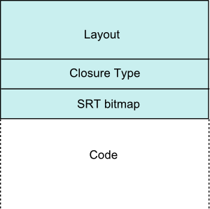

Haskell -> GHC Haskell -> Core -> STG -> Cmm -> Assembly
Primitive types (GHC.Prim):
All primitive types are unlifted – can’t contain ⊥.
ghci> :browse GHC.PrimAll variants of Int (In8, Int16, Int32, Int64) are represented internally by Int# (64bit) on a 64bit machine.
data Int32 = I32# Int# deriving (Eq, Ord, Typeable)
instance Num Int32 where
(I32# x#) + (I32# y#) = I32# (narrow32Int# (x# +# y#))
...Data constructors lift a type, allowing ⊥.
newtype IO a = IO (State# RealWorld -> (# State# RealWorld, a #))
returnIO :: a -> IO a
returnIO x = IO $ \ s -> (# s, x #)
bindIO :: IO a -> (a -> IO b) -> IO b
bindIO (IO m) k = IO $ \ s -> case m s of (# new_s, a #) -> unIO (k a) new_sRealWorld token enforces ordering through data dependencecomp :: Handle -> IO ()
comp = do name <- hGetLine h
hPutStrLn h namecomp :: GHC.IO.Handle.Types.Handle -> GHC.Prim.State# GHC.Prim.RealWorld
-> (# GHC.Prim.State# GHC.Prim.RealWorld, () #)
comp = \h rw1 ->
case GHC.IO.Handle.Text.hGetLine h rw1 of
(# rw2, str #) -> GHC.IO.Handle.Text.hPutStr h str rw2RealWorld tokenunsafePerformIO :: IO a -> a
unsafePerformIO m = unsafeDupablePerformIO (noDuplicate >> m)
unsafeDupablePerformIO :: IO a -> a
unsafeDupablePerformIO (IO m) = lazy (case m realWorld# of (# _, r #) -> r)Idea: map Haskell to a small lanuage for easier optimization and compilation
Functional lazy language
It consists of only a hand full of constructs!
variables, literals, let, case, lambda abstraction, applicationlet means allocation, case means evaluationghc -ddump-simpl M.hs > M.coredata Expr b -- "b" for the type of binders,
= Var Id
| Lit Literal
| App (Expr b) (Arg b)
| Lam b (Expr b)
| Let (Bind b) (Expr b)
| Case (Expr b) b Type [Alt b]
| Type Type
| Cast (Expr b) Coercion
| Coercion Coercion
| Tick (Tickish Id) (Expr b)
data Bind b = NonRec b (Expr b)
| Rec [(b, (Expr b))]
type Arg b = Expr b
type Alt b = (AltCon, [b], Expr b)
data AltCon = DataAlt DataCon | LitAlt Literal | DEFAULTLets now look at how Haskell is compiled to Core.
Haskell
idChar :: Char -> Char
idChar c = cCore
idChar :: GHC.Types.Char -> GHC.Types.Char
[GblId, Arity=1]
idChar = \ (c :: GHC.Types.Char) -> cHaskell
id :: a -> a
id x = x
idChar2 :: Char -> Char
idChar2 = idCore
id :: forall a. a -> a
id = \ (@ a) (x :: a) -> x
idChar2 :: GHC.Types.Char -> GHC.Types.Char
idChar2 = id @ GHC.Types.CharHaskell
map :: (a -> b) -> [a] -> [b]
map _ [] = []
map f (x:xs) = f x : map f xsCore
map :: forall a b. (a -> b) -> [a] -> [b]
map = \ (@ a) (@ b) (f :: a -> b) (xs :: [a]) ->
case xs of _
[] -> GHC.Types.[] @ b
: y ys -> GHC.Types.: @ b (f y) (map @ a @ b f ys)New case syntax to make obvious that evaluation is happening:
case e of result _
__DEFAULT -> resultHaskell
dox :: Int -> Int
dox n = x * x
where x = n + 2Core
dox :: GHC.Types.Int -> GHC.Types.Int
dox = \ (n :: GHC.Types.Int) ->
let x :: GHC.Types.Int
x = GHC.base.plusInt n (GHC.Types.I# 2)
in GHC.base.multInt x xHaskell
iff :: Bool -> a -> a -> a
iff True x _ = x
iff False _ y = yCore
iff :: forall a. GHC.Bool.Bool -> a -> a -> a
iff = \ (@ a) (d :: GHC.Bool.Bool) (x :: a) (y :: a) ->
case d of _
GHC.Bool.False -> y
GHC.Bool.True -> xHaskell
typeclass MyEnum a where
toId :: a -> Int
fromId :: Int -> aCore
data MyEnum a = DMyEnum (a -> Int) (Int -> a)
toId :: forall a. MyEnum a -> a -> GHC.Types.Int
toId = \ (@ a) (d :: MyEnum a) (x :: a) ->
case d of _
DMyEnum f1 _ -> f1 x
fromId :: forall a. MyEnum a -> GHC.Types.Int -> a
fromId = \ (@ a) (d :: MyEnum a) (x :: a) ->
case d of _
DMyEnum _ f2 -> f2 xHaskell
instance MyEnum Int where
toId = id
fromId = idCore
fMyEnumInt :: MyEnum GHC.Types.Int
fMyEnumInt =
DMyEnum @ GHC.Types.Int
(id @ GHC.Types.Int)
(id @ GHC.Types.Int)Haskell
instance (MyEnum a) => MyEnum (Maybe a) where
toId (Nothing) = 0
toId (Just n) = toId n
fromId 0 = Nothing
fromId n = Just $ fromId nCore
fMyEnumMaybe :: forall a. MyEnum a -> MyEnum (Maybe a)
fMyEnumMaybe = \ (@ a) (dict :: MyEnum a) ->
DMyEnum @ (Maybe a)
(fMyEnumMaybe_ctoId @ a dict)
(fMyEnumMaybe_cfromId @ a dict)
fMyEnumMaybe_ctoId :: forall a. MyEnum a -> Maybe a -> Int
fMyEnumMaybe_ctoId = \ (@ a) (dict :: MyEnum a) (mx :: Maybe a) ->
case mx of _
Nothing -> I# 0
Just n -> case (toId @ a dict n) of _ { I# y -> I# (1 +# y) }MyEnum (Maybe a) constraint will take in a MyEnum a dictionary as an argument and call fMyEnumMaybe to construct the needed value.Haskell
data Point = Point {-# UNPACK #-} !Int
{-# UNPACK #-} !IntCore
data Point = Point Int# Int#Haskell
addP :: P -> Int
addP (P x y ) = x + yCore
addP :: P -> Int
addP = \ (p :: P) ->
case p of _
P x y -> case +# x y of z
__DEFAULT -> I# zHaskell
module M where
{-# NOINLINE add #-}
add x y = x + y
module P where
addP_bad (P x y) = add x yCore
addP_bad = \ (p :: P) ->
case p of _ {
P x y ->
let { x' = I# x
y' = I# y
} in M.add x' y'
}add only works with boxed typescase means evaluation, let means allocationA lot of the optimizations that GHC does is through core to core transformations.
Lets look at two of them:
Fun Fact: Estimated that functional languages gain 20 - 40%
improvement from inlining Vs. imperative languages which gain 10 - 15%Consider this factorial implementation in Haskell:
fac :: Int -> Int -> Int
fac x 0 = a
fac x n = fac (n*x) (n-1)x & n must be represented by pointers to a possibly unevaluated objects (thunks)Core
fac :: Int -> Int -> Int
fac = \ (x :: Int) (n :: Int) ->
case n of _
I# n# -> case n# of _
0# -> x
__DEFAULT -> let one = I# 1
n' = n - one
x' = n * x
in fac x' n'fac will immediately evaluate the thunks and unbox the values!Compile fac with optimizations.
wfac :: Int# -> Int# -> Int#
wfac = \ x# n# ->
case n# of _
0# -> x#
_ -> case (n# -# 1#) of n'#
_ -> case (n# *# x#) of x'#
_ -> $wfac x'# n'#
fac :: Int -> Int -> Int
fac = \ a n ->
case a of
I# a# -> case n of
I# n# -> case ($wfac a# n#) of
r# -> I# r#fac ⊥ n = opt(fac) ⊥ nThe idea of the SpecConstr pass is to extend the strictness and unboxing from before but to functions where arguments aren’t strict in every code path.
Consider this Haskell function:
drop :: Int -> [a] -> [a]
drop n [] = []
drop 0 xs = xs
drop n (x:xs) = drop (n-1) xsdrop ⊥ [] = []drop ⊥ (x:xs) = ⊥So we get this code without extra optimization:
drop n xs = case xs of
[] -> []
(y:ys) -> case n of
I# n# -> case n# of
0 -> []
_ -> let n' = I# (n# -# 1#)
in drop n' ysn and always evaluate it!The SpecConstr pass takes advantage of this to create a specialised version of drop that is only called after we have passed the first check.
-- works with unboxed n
drop' n# xs = case xs of
[] -> []
(y:ys) -> case n# of
0# -> []
_ -> drop (n# -# 1#) xs
drop n xs = case xs of
[] -> []
(y:ys) -> case n of
I# n# -> case n# of
0 -> []
_ -> drop' (n# -# 1#) xs-fspec-constr-threshol and -fspec-constr-count flags)After Core, GHC compiles to another intermediate language called STG
case = evaluation and ONLY place evaluation occurs (true in Core)let = allocation and ONLY place allocation occurs (not true in Core)letghc -ddump-stg A.hs > A.stgHaskell
map :: (a -> b) -> [a] -> [b]
map f [] = []
map f (x:xs) = f x : map f xsSTG
map :: forall a b. (a -> b) -> [a] -> [b]
map = \r [f xs]
case xs of _
[] -> [] []
: z zs -> let bds = \u [] map f zs
bd = \u [] f z
in : [bd bds][arg1 arg2] f\r - re-entrant function\u - updatable function (i.e., thunk)[]Graph reduction is a good computational model for lazy functional languages.
f g = let x = 2 + 2
in (g x, x)Graph reduction is a good computational model for lazy functional languages.
f g = let x = 2 + 2
in (g x, x)Graph reduction is a good computational model for lazy functional languages.
Can think of your Haskell program as progressing by either adding new nodes to the graph or reducing existing ones.
A stack frame is a closure
Functions will prepare stack in advance to setup call chains
| Closure | Info Table | ||

|
 |
data G = G (Int -> Int) {-# UNPACK #-} !Int[Header | Pointers... | Non-pointers...]jmp Sp[0]f = \x -> let g = \y -> x + y
in g x[ &g | x ]foldr (:)[Header | Arity | Payload size | Function | Payload]range = [1..100][Header | Pointers... | Non-pointers...]On X86 64bit - first 5 arguments passed in registers, rest on stack
R1 register in Cmm code usually is a pointer to the current closure (i.e., similar to this in OO languages)
mk :: Int -> Int
mk x = x + 1// thunk entry - setup stack, evaluate x
mk_entry()
entry:
if (Sp - 24 < SpLim) goto gc; // check for enough stack space
I64[Sp - 16] = stg_upd_frame_info; // setup update frame (closure type)
I64[Sp - 8] = R1; // set thunk to be updated (payload)
I64[Sp - 24] = mk_exit; // setup continuation (+)
Sp = Sp - 24; // decrease stack
R1 = I64[R1 + 8]; // grab 'x' from environment
jump I64[R1] (); // eval 'x'
gc: jump stg_gc_enter_1 ();stg_upd_frame_info RTS function that handles updating a thunk with it’s result.mk :: Int -> Int
mk x = x + 1// thunk exit - setup value on heap, tear-down stack
mk_exit()
entry:
Hp = Hp + 16;
if (Hp > HpLim) goto gc;
v::I64 = I64[R1] + 1; // perform ('x' + 1)
I64[Hp - 8] = GHC_Types_I_con_info; // setup Int closure
I64[Hp + 0] = v::I64;
R1 = Hp; // point R1 to computed thunk value
Sp = Sp + 8; // pop stack
jump (I64[Sp + 0]) (); // jump to continuation ('stg_upd_frame_info')
gc: HpAlloc = 16;
jump stg_gc_enter_1 ();Payload also now needs to include the value
unsafePerformIO can lead duplication!Thunk closure:
[Header | Pointers... | Non-pointers...]
Header = [ Info Table Pointer | Result Slot ]
Result slot empty when thunk unevaluated
Update code first places result in result slot and secondly changes the info table pointer
Safe to do without synchronization (need write barrier) on all architectures GHC supports: no thread will see the new info table pointer without a valid result slot pointer
Evaluation model is we always enter a closure, even values
This is poor for performance, we prefer to avoid entering values every single time
An optimization that GHC does is pointer tagging. The trick is to use the final bits of a pointer which are usually zero (last 2 for 32bit, 3 on 64) for storing a ‘tag’
Our example code from before:
mk :: Int -> Int
mk x = x + 1Changes with pointer tagging:
mk_entry()
entry:
...
R1 = I64[R1 + 16]; // grab 'x' from environment
if (R1 & 7 != 0) goto cxd; // check if 'x' is eval'd
jump I64[R1] (); // not eval'd so eval
cxd: jump mk_exit (); // 'x' eval'd so jump to (+) continuation
}
mk_exit()
cx0:
I64[Hp - 8] = ghczmprim_GHCziTypes_Izh_con_info; // setup Int closure
I64[Hp + 0] = v::I64; // setup Int closure
R1 = Hp - 7; // point R1 to computed thunk value (with tag)
...
}data MyBool a = MTrue a | MFalse aInt# for representing true and false.Haskell
mycase :: Maybe Int -> Int
mycase x = case x of Just z -> z; Nothing -> 10Cmm
mycase_entry() // corresponds to forcing 'x'
entry:
R1 = R2; // R1 = 'x'
I64[Sp - 8] = mycase_exit; // setup case continuation
Sp = Sp - 8;
if (R1 & 7 != 0) goto crL; // check pointer tag to see if x eval'd
jump I64[R1] (); // x not eval'd, so eval
exit:
jump mycase_exit (); // jump to case continuation
mycase_exit() // case continuation
entry:
v::I64 = R1 & 7; // get tag bits of 'x' and put in local variable 'v'
if (_crD::I64 >= 2) goto crE; // can use tag bits to check which constructor we have
R1 = stg_INTLIKE_closure+417; // 'Nothing' case
Sp = Sp + 8;
jump (I64[Sp + 0]) (); // jump to continuation ~= return
exit:
R1 = I64[R1 + 6]; // get 'z' thunk inside Just
Sp = Sp + 8;
R1 = R1 & (-8); // clear tags on 'z'
jump I64[R1] (); // force 'z' thunkNo lecture on Compilers is complete without assembly code!
add :: Int -> Int -> Int
add x y = x + y + 2A_add_info:
.LcvZ:
leaq -16(%rbp),%rax
cmpq %r15,%rax
jb .Lcw1
movq %rsi,-8(%rbp)
movq %r14,%rbx
movq $sul_info,-16(%rbp)
addq $-16,%rbp
testq $7,%rbx
jne sul_info
jmp *(%rbx)
.Lcw1:
movl $A_add_closure,%ebx
jmp *-8(%r13)
sul_info:
.LcvS:
movq 8(%rbp),%rax
movq 7(%rbx),%rcx
movq %rcx,8(%rbp)
movq %rax,%rbx
movq $suk_info,0(%rbp)
testq $7,%rbx
jne suk_info
jmp *(%rbx)
suk_info:
.LcvK:
addq $16,%r12
cmpq 144(%r13),%r12
ja .LcvP
movq 7(%rbx),%rax
addq $2,%rax
movq 8(%rbp),%rcx
addq %rax,%rcx
movq $ghczmprim_GHCziTypes_Izh_con_info,-8(%r12)
movq %rcx,0(%r12)
leaq -7(%r12),%rbx
addq $16,%rbp
jmp *0(%rbp)
.LcvP:
movq $16,184(%r13)
.LcvQ:
jmp *-16(%r13)So that’s is all I can cover in this lecture.
Here are some resources to learn about GHC, they were also used to create these slides: